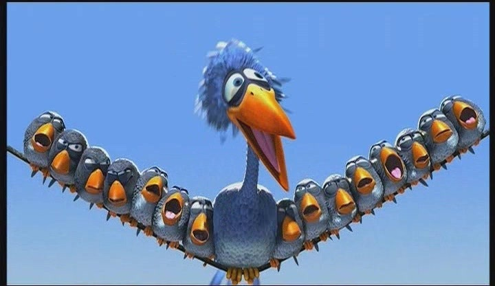

Lab 12. BVP example#
This activity will explore the code behind some numerical techniques for boundary value problems and some applications using routines from python libraries. Make sure to put a text cell with your name at the top.
In all of the tasks below. Make sure to use figures and text cells to explain what you are doing. Comments in code are useful to describe your code, but not a replacement for other explanation. Code that uses techniques not introduced in class and not explained well may be questioned further for academic honesty issues. Submissions with just code and results will not earn marks higher than a C.
import numpy as np
import matplotlib.pyplot as plt
from scipy.optimize import fsolve
from scipy.integrate import solve_ivp
%matplotlib inline
Introduction.#
Consider the Pixar short “For the birds.”
{kind=link}
In the video the birds land on a telephone wire and the wire sags. Note that while this video in animated, Pixar doesn’t ‘draw’ a sagging wire, they model the physics of the system and let the computer calculate where the wire should be using solutions to boundary value problems. In this lab we’ll look at a couple example cases of the types of calculations modeling this situation.
Assume a 30 meter wire is attached to the poles at a height on 10 meters on each side. If the wire is in equilibrium (in time) and we assume the wire has a constant tension, we can say the vertical position \(y\) of the wire at horizontal position \(x\) can be modeled with
In the equation above \(f(x)\) is the sum of the forces other than the tension of the wire at position \(x\). Let’s assume this is just gravity for now.
Exercise 1. No birds on the wire#
Assume the mass of the wire itself is such that \(f(x) = f_{wire}(x) = 0.001\). Use a centered difference scheme with 200 segments to set up a system of linear equations to solve the BVP and plot your solution.
Exercise 2. Small birds on the wire#
Assume the mass of the wire itself is such that in addition to the force from the gravity of the wire there are small birds on the wire.
Copy your centered difference scheme from above and modify it to set up a system of linear equations to solve the BVP and plot your solution.
Exercise 3. Small birds and one large bird on the wire.#
Add a large bird to the wire and compute a new solution. You have the freedom to decide how a large bird should be added here, but you need to explain what you do with text cells.
Last Task - Save your work as both a pdf and a ipynb file and upload to Canvas.#
Files not saved as pdfs or incorrectly uploaded files will not earn any points. You can double-check your submissions.